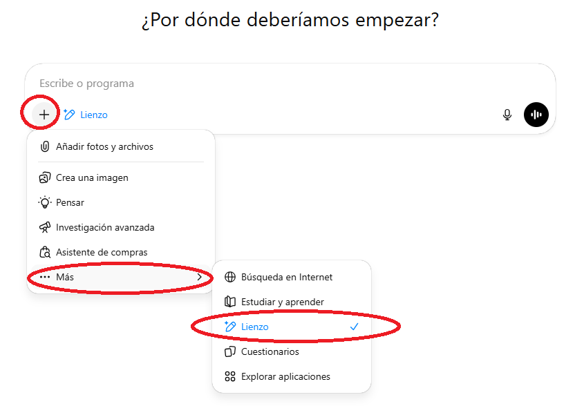
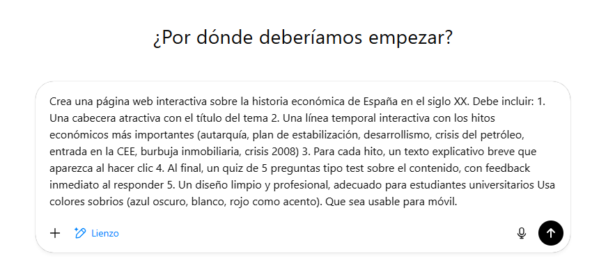
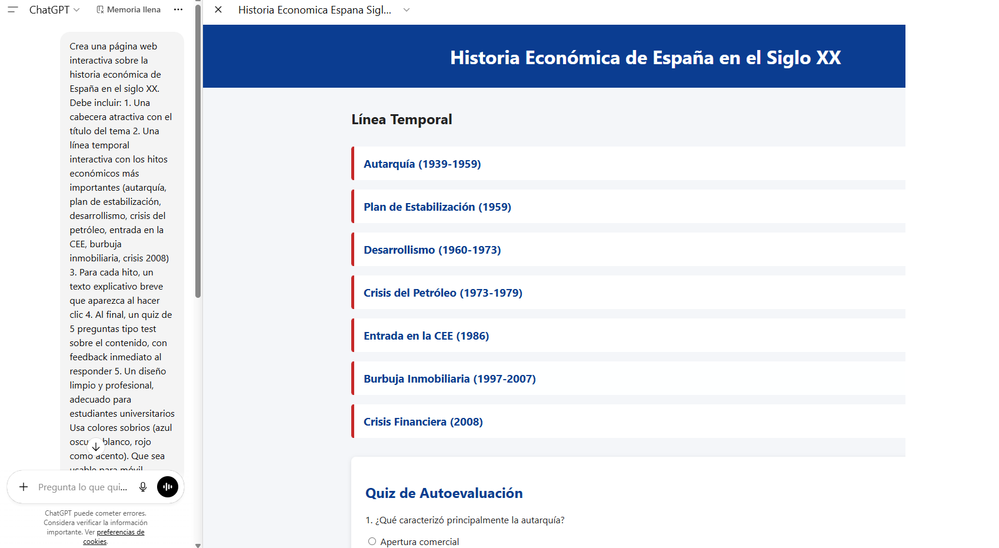
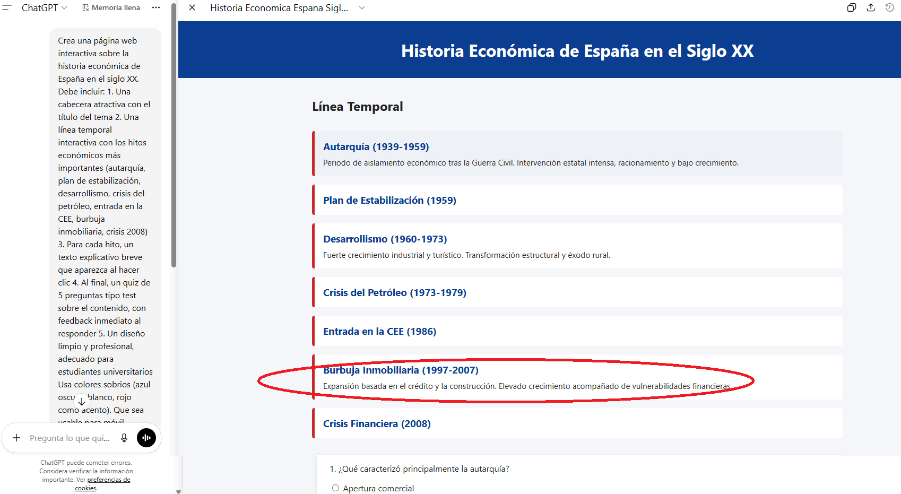
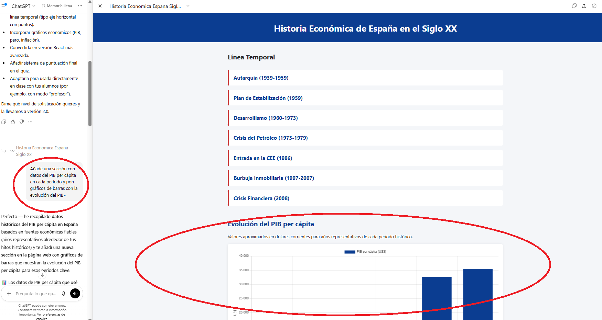
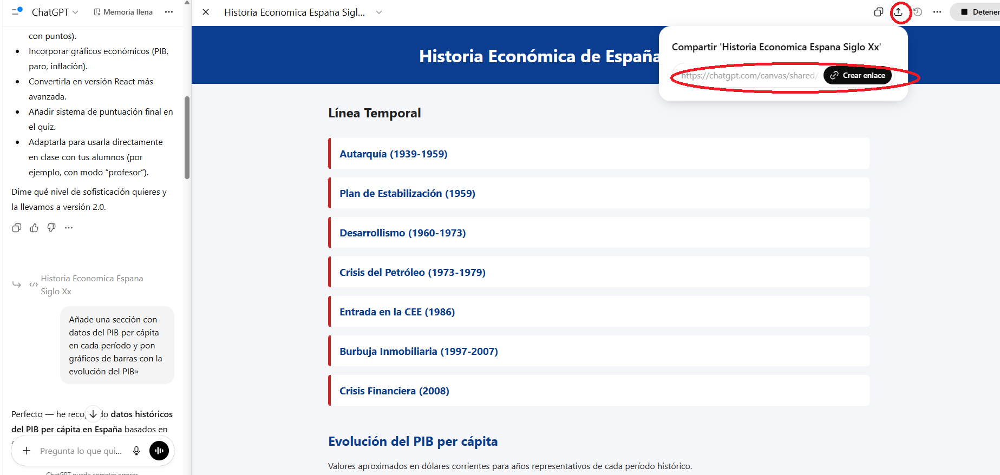

🎯 ¿Qué son los lienzos / artefactos?
Los lienzo o canvas (ChatGPT y Gemini) y artefactos (Claude) son funcionalidades que permiten visualizar vistas previas de trabajos en curso, y compartirlas. Esto implica que podemos generar aplicaciones web funcionales directamente desde el chat. La IA escribe código HTML, CSS y JavaScript que se ejecuta en el navegador, creando páginas interactivas sin que tú necesites programar.
En esta actividad, crearemos paso a paso una web usable sobre historia económica española con lecciones informativas y preguntas interactivas.
- Puedes crear materiales docentes interactivos en minutos
- No necesitas saber HTML ni programar
- El resultado es una página web funcional que puedes compartir
- Puedes iterar sobre el resultado pidiendo cambios en lenguaje natural
🚀 Guía paso a paso
Accede a Claude o ChatGPT
Vamos a usar ChatGPT (chatgpt.com) como herramienta principal, ya que es la herramienta más estándar. También se puede hacer muy similar con Gemini y con Claude (fue quien lo inventó, ahí se llaman «artefactos»).
- Ve a chatgpt.com e inicia sesión
- Inicia una nueva conversación
- Selecciona lienzo/canvas en el menú +

Describe la web que quieres crear
Escribe un prompt detallado describiendo lo que necesitas. Cuanto más específico seas, mejor será el resultado. Aquí tienes un ejemplo:

Revisa la aplicación generada
ChatGPT generará un aplicación con la web completa. Irá programando y podrás ver la vista previa e iterar en un menú lateral.
- Vista previa: verás la web funcionando directamente en el panel
- Interactividad: puedes hacer clic en los elementos, responder el quiz, etc.
- Código: puedes ver el código HTML/CSS/JS generado


Itera pidiendo mejoras
La magia de los artefactos es que puedes pedir cambios en lenguaje natural y la IA actualizará la web. Prueba peticiones como:
- «Añade una sección con datos del PIB per cápita en cada período»
- «Pon gráficos de barras con la evolución del PIB»
- «Añade 5 preguntas más al quiz»
- «Cambia los colores a los de la Universidad de Murcia (teal oscuro y rojo)»
- «Añade una sección de conclusiones al final»
- «Haz que las preguntas se mezclen aleatoriamente cada vez que se carga la página»

Descarga o comparte la web
Cuando estés satisfecho con el resultado, puedes:
- Compartir el resultado: haz clic en el botón de compartir superior
- Configurar el enlace: puedes elegir que la aplicación sea accesible o solo para tu cuenta
- Compartir el enlace: al configurarlo accesible, cualquiera puede entrar a una web donde se accede a la vista previa (desde ese enlace no se accede al chat con el que hemos generado la app web)

Experimenta con otras ideas
Si te queda tiempo, prueba a crear otros tipos de contenido interactivo:
- Simulador de convergencia económica: con sliders para ajustar parámetros
- Dashboard de indicadores: gráficos interactivos con datos del INE/Eurostat
- Comparador de políticas: selecciona países y compara indicadores
- Flashcards: tarjetas de repaso con conceptos del temario
- Mapa interactivo: indicadores por comunidad autónoma
💭 Ideas de prompts para economistas
- «Crea un simulador visual de oferta y demanda donde pueda arrastrar las curvas»
- «Haz una calculadora interactiva del multiplicador keynesiano con explicaciones paso a paso»
- «Crea un juego de matching donde los estudiantes emparejen economistas con sus teorías principales»
- «Genera un dashboard con gráficos de la evolución de la deuda pública española desde 1990»
- «Crea un quiz de 20 preguntas sobre macroeconomía básica con puntuación final y explicaciones»